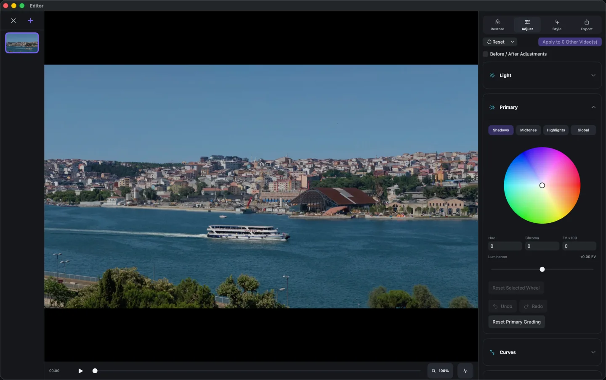

Restore Log video
on your iPhone.
Bring natural color back to a batch of camera clips. Export to Photos with the original capture date when your footage includes it.
For iPhone, iPad and Mac

From memory card to Photos
Import the shoot
Select clips from Photos or Files. Check the camera and Log profile, then preview the technical restoration.
Grade the batch
Adjust exposure, white balance or curves on one clip. Apply the shared adjustments to the rest of the shoot.
Find it under the shoot date
Export your chosen clips to Photos. When the source contains a capture date and your export settings preserve it, the finished video keeps that date.

A 20-second tour of HUEO
Read the Luna Ultra I-Log guideA silent walkthrough of the published App Store screenshots.
Read the walkthrough
The iPad restoration and export panels show the same frame. The iPhone editor shows the I-Log input profile, the Mac editor shows its color wheels, and the iPad export panel shows the options for keeping available capture information.
Start with your camera profile
Check the recording mode for each clip. Support depends on the camera, codec and color tags. Review the suggested profile or choose the matching input yourself.
- Apple
- Apple Log / Apple Log 2
- Insta360
- I-Log
- Nikon
- N-Log
- Sony
- S-Log3
- DJI
- D-Log / D-Log2
- Canon
- Canon Log 2 / 3
- Fujifilm
- F-Log / F-Log2
Fine-tune color on a larger screen
Balance shadows, midtones and highlights with color wheels. Check your scopes before choosing an output format. Your media is processed on your device.


Choose an export allowance
Free
30 files
Try restoration and batch processing with 30 successful file exports in total. Previews, cancellations and failed exports use no allowance.
HUEO Pro
Unlimited exports
For regular shoots, choose a monthly plan, an annual plan or a one-time Lifetime Pro purchase. See local pricing on the in-app purchase screen.